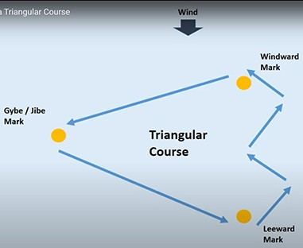

Sailing the Triangular Race Course
The standard triangular course (often called the Olympic Triangle) tests a sailor's ability across all fundamental angles of sail. Successfully navigating this course in the ILCA simulator requires precise sail trim, strategic tactical choices, and fluid boat handling at each mark transition.

Figure 1: Overview of the Triangular Race Course showing Windward, Gybe, and Leeward marks.
1. The Upwind Leg (Beating to the Windward Mark)
The race begins at the bottom of the course, sailing directly against the wind toward the Windward Mark. Because an ILCA cannot sail directly into the wind, you must progress by "beating"—sailing at a close-hauled angle (approximately 45 degrees off the wind) and executing a series of tacks.
- Sail Trim: Sheet in tightly, flatten the sail using the outhaul and cunningham to maximize speed, and rely heavily on hiking to keep the boat flat.
- Strategy: Watch for wind shifts. Tack on headers to stay on the lifted tack, bringing you closer to the mark faster.
2. The Top Mark and First Reach (Windward to Gybe Mark)
As you round the Windward Mark, you will bear away onto a broad reach or beam reach heading toward the Gybe / Jibe Mark. This transition brings a dramatic increase in boat speed.
- Sail Trim: Ease the sheets immediately as you bear away. Ease the cunningham and outhaul to add depth and power back into the sail. Move your body weight slightly backward to keep the bow from digging into the water.
- Boat Handling: Maintain a clean round without letting the boat heel excessively to windward or leeward.
3. The Gybe Mark and Second Reach (Gybe to Leeward Mark)
The Gybe Mark requires a tactical turn to change the side of the boat that the wind is blowing across, setting your course down toward the Leeward Mark.
- The Maneuver: Initiate a controlled gybe. In an ILCA dinghy, timing is everything—pull the sail across smoothly as the stern passes through the eye of the wind, and use your body weight to counter the force of the sail snapping over.
- Course: After the gybe, settle onto the new reaching angle, keeping an eye on your lane and checking for overtaking boats from behind.
4. The Bottom Mark Rounding (Leeward Mark to Next Upwind)
The Leeward Mark rounding transitions the boat from a fast downwind/reaching angle back into a hard upwind beat. This is one of the most critical zones for gaining or losing distance.
- The Maneuver: Avoid making a sharp, blocky turn. Approach the mark slightly wide and execute a smooth, progressive turn to snap tight next to the buoy.
- Sail Trim: Simultaneously sheet in hard as you round the mark. If you try to turn before your sail is sheeted in, the boat will stall and slide sideways. Immediately get your weight out on the hiking strap to stabilize the boat.
ILCA Simulator Pro-Tip
Always anticipate your controls ahead of time. Do not wait until you reach the mark to adjust your controls. Adjust your outhaul, cunningham, and vang slightly before your turns to ensure optimal sail shape the exact second you enter the next leg.
A warning will pop up to indicate that you near the mark when you are 50m near the mark
It destination will switch to the next mark when you get with 20m of the current mark. That's when you should tack right away!